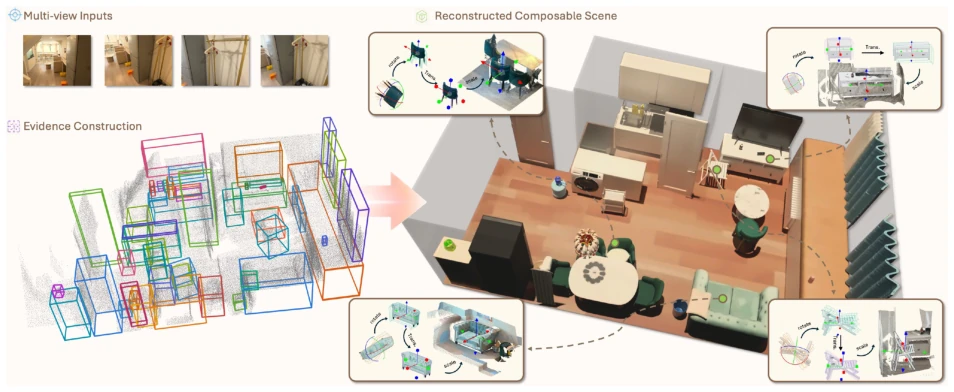
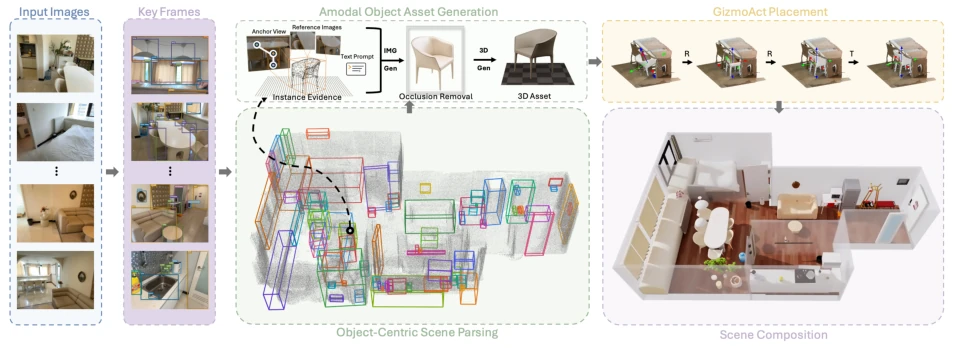
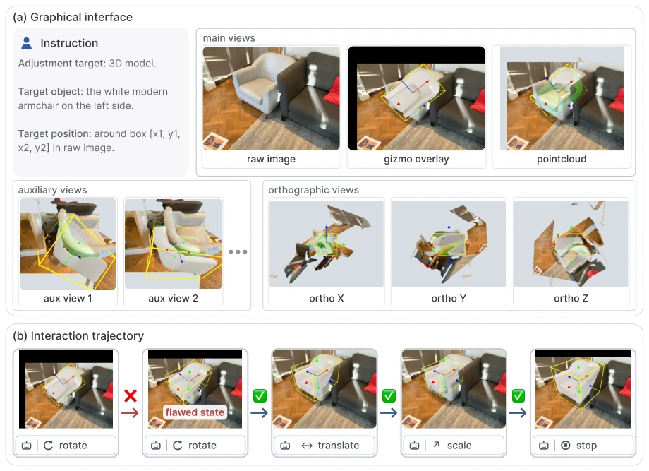
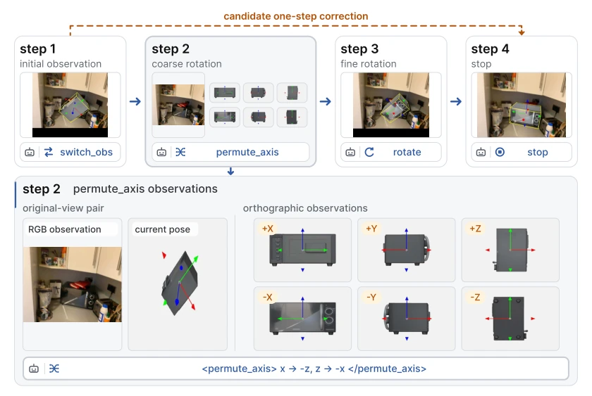
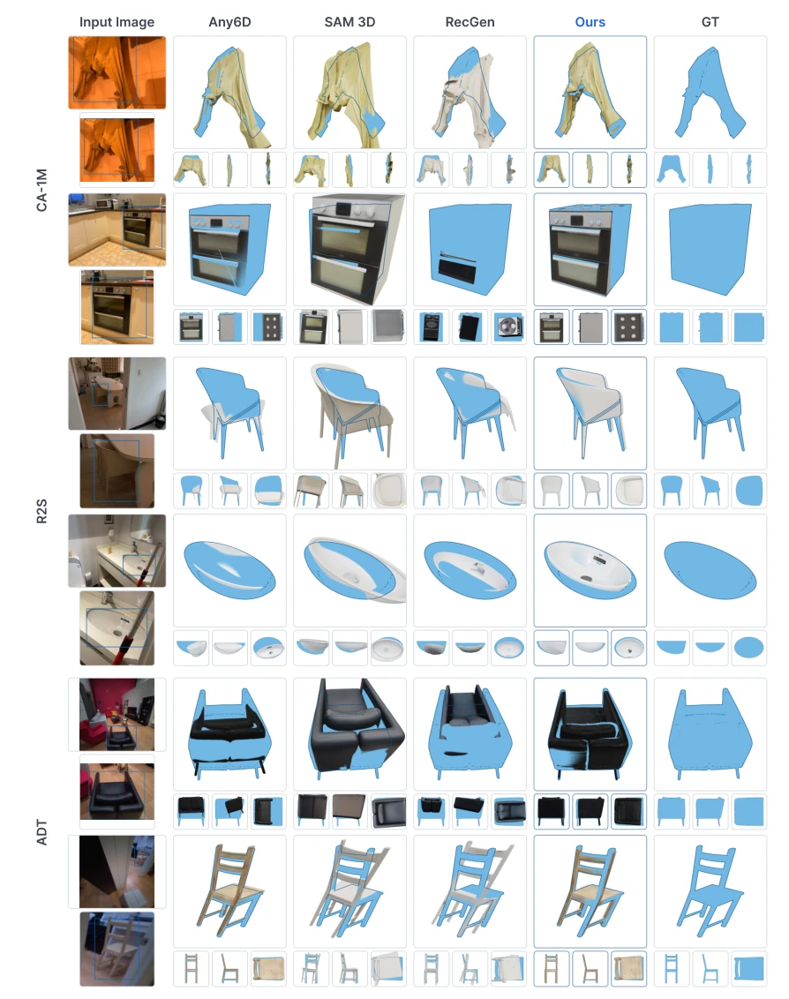
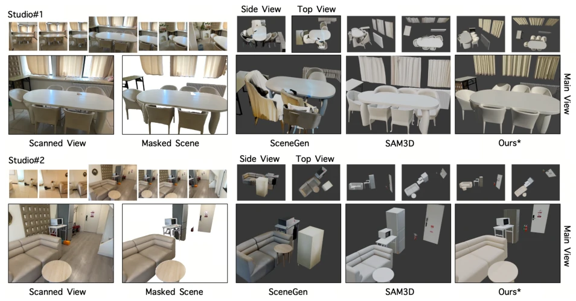
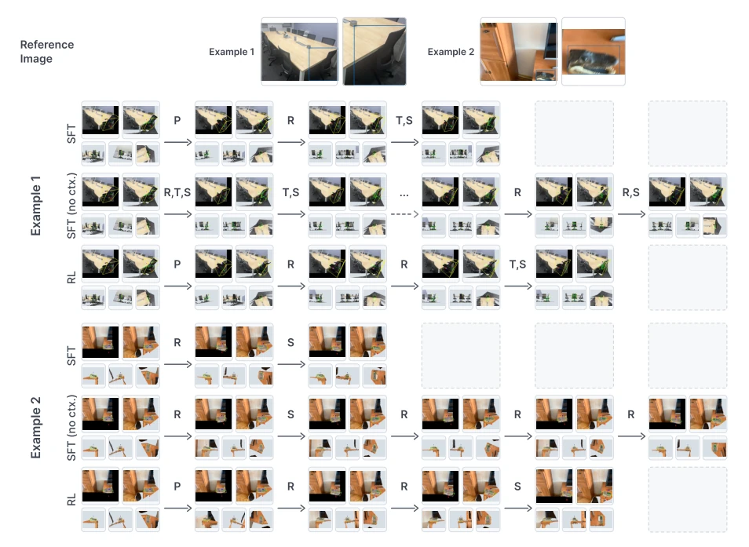
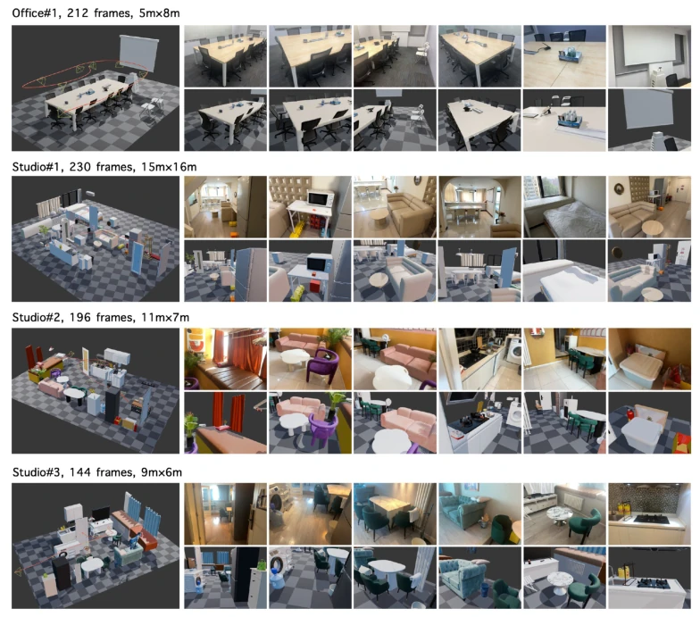
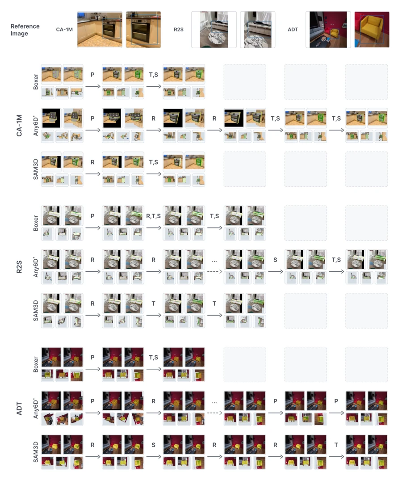
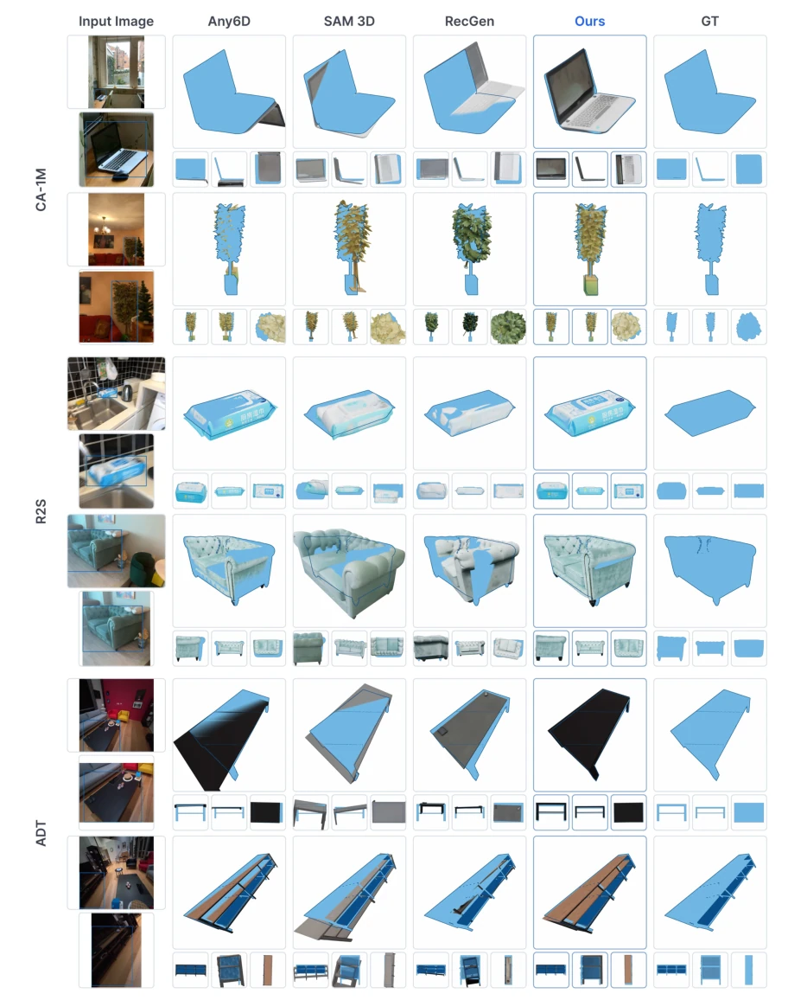

The name "Lucida" is aptly chosen, borrowing the meaning of "drawing mirror," aiming to "trace" real scenes into simulation. However, this task is not easy; existing methods either blur the scene like NeRF [60] or rely on libraries like CAD retrieval [5, 30]. Lucida's ingenuity lies in deferring precision requirements, gathering evidence first before generation, and finally using a VLM as a "hand" for adjustment. Nevertheless, relying on large-scale synthetic data to train the VLM raises concerns: when encountering unseen new furniture, will this "hand" tremble? Furthermore, GUI interactions like GizmoAct likely incur non-trivial inference costs, raising concerns about real-time performance. While it addresses the pain point of "editability," it offloads all computational pressure to the VLM and RL, essentially trading compute for precision.
Embodied AI requires editable simulation environments, yet existing reconstruction methods such as NeRF [60] and 3D Gaussian Splatting [39] are monolithic and cannot manipulate objects individually. Methods based on CAD retrieval [5, 30] suffer from limited fidelity. Existing Real-to-Sim pipelines (Parse-Generate-Place) assume perfect input (no occlusion, precise geometry), which real cluttered scenes simply cannot provide. End-to-end methods [67, 108] suffer from interference between shape and pose prediction. Lucida attempts to resolve this contradiction by not requiring initial precision, but rather employing closed-loop correction.

Figure 1 Teaser. Given posed multi-view observations of a real indoor scene, our method constructs object-centric multi-view evidence, generates complete 3D assets, and places them into a composable reconstruction. The insets illustrate closed-loop rotation, translation, and scale refinement of object models against the observed scene geometry.
The workflow is divided into three steps. The Parse stage constructs a scene graph; nodes carry multi-view evidence packages (views, masks, point clouds, 3D boxes, descriptions), resolving occlusion through keyframe selection and full-sequence evidence integration to generate the scene graph. The Generate stage utilizes evidence to synthesize occlusion-free images, which are then converted into 3D assets to address geometric incompleteness. The Place stage is the core, proposing GizmoAct, which transforms pose estimation into multi-round GUI interaction. The VLM policy corrects pose through closed-loop operation of the Gizmo (rotation, translation, scaling), rather than directly predicting absolute coordinates. The action space includes update_pose and stop, along with permute_axis for handling large rotation errors. Training employs SFT combined with RL, injecting errors to enhance robustness, with the reward function quantified based on IoU and rotation error.

Figure 2 Overview of our method. Given posed scene observations, the parsing stage constructs an object-centric scene graph with per-object multi-view evidence and coarse 3D estimates. For each object, the multi-view evidence is used to synthesize a complete object-centric image, which is then lifted into a 3D asset. GizmoAct places the asset through closed-loop 9-DoF gizmo manipulation, iteratively refining rotation, translation, and anisotropic scale until it decides that alignment is reached. The placed assets form an editable reconstruction of the captured scene.

Figure 3 GizmoAct graphical observation and interaction trajectory. (a) The observation at one turn. The instruction block specifies the adjustment target and the referring cue; the main views pair the raw input image with renderings that overlay the asset, its yellow 3D box, and the gizmo showing the object’s local frame (red/green/blue axes), in which all edits are expressed. Semi-transparent green marks the model surface occluded by the scene point cloud. Auxiliary views add multi-view evidence, and orthographic views along the local axes support fine refinement. (b) A rollout in which the policy issues a flawed edit (red cross) and recovers from the resulting state (green checks). During SFT data construction, we simulate such cases through error injection and supervise only the recove

Figure 4 Extended actions for coarse rotation. When the initial rotation error is large (step 1), the policy first issues switch_obs, which changes only the rendering mode: the next observation (step 2, enlarged in the bottom panel) shows the original-view pair together with six orthographic renderings of the asset along its signed local axes, exposing the sides the main views hide. From these views the policy predicts a single permute_axis action, which selects one of the 24 axis-aligned reorientations and removes the dominant rotation residual in one step. The remaining error is repaired by update_pose (step 3) before the policy predicts stop (step 4). The dashed arrow marks the alternative of predicting the whole correction with a single regular update_pose, skipping the permutation, wh
实验Experiments
在 CA-1M、R2S-Scene、ADT 等数据集测试。对比 Boxer、SAM 3D、SceneGen 等。指标包括 mAP、ADD-SB、Scene F-Score。Lucida 在 R2S-Scene 上 mAP 从 0.351 提至 0.592，Scene F-Score 达 0.924 优于 SAM 3D 的 0.794。GizmoAct 在姿态估计上 ADD-SB@0.05 提升显著，CA-1M 上从 57.8% 升至 83.4%。消融显示 RL 训练比纯 SFT 更能处理初始误差，且策略能适应不同初始化器，如 Boxer 或 SAM 3D 生成的初始位姿。
Tested on datasets including CA-1M, R2S-Scene, and ADT. Compared against Boxer, SAM 3D, SceneGen, etc. Metrics include mAP, ADD-SB, and Scene F-Score. Lucida improved mAP on R2S-Scene from 0.351 to 0.592, with Scene F-Score reaching 0.924, outperforming SAM 3D's 0.794. GizmoAct showed significant improvement in pose estimation ADD-SB@0.05, rising from 57.8% to 83.4% on CA-1M. Ablation studies show RL training handles initial errors better than pure SFT, and the policy can adapt to different initializers, such as initial poses generated by Boxer or SAM 3D.

Figure 6 Qualitative comparison of object pose estimation on CA-1M, R2S-Object, and ADT. The leftmost column shows the scene image and a close-up with the target instance boxed. Blue renders the ground-truth model at the ground-truth pose; each method’s model, posed by its prediction, is rendered jointly with this blue reference, so their mutual occlusion—together with the three axis-aligned close-ups—reveals the pose accuracy, and the GT column shows the reference alone. Lucida aligns the generated assets more closely with the observed instances across categories, shape complexity, and viewpoints.

Figure 8 Qualitative scene-level comparison. For each scene, we show the multi-view capture, a scanned reference view, the selected evaluation instances, and reconstructions rendered from the main, side, and top viewpoints. Scene- Gen and SAM 3D receive the same reference image and instance masks, whereas Lucida uses per-instance multi-view evidence. The asterisk marks our reconstruction restricted to the object instances included in the comparison.

Figure 9 Qualitative comparison of GizmoAct training strategies on two difficult examples. Each row shows the closed-loop rollout of the SFT, SFT (no context), or RL policy from the same initialization, evaluated as in Table 7; notation follows Figure 7. The SFT policies stop early with residual rotation errors or drift without converging, whereas RL keeps correcting the remaining rotation before stopping.
其他图片Other Figures

Figure 5 Gallery of composed scenes. Four real captures reconstructed by Lucida, annotated with the number of captured frames and the room extent. For each scene, the left panel shows the composed object-centric scene with the capture trajectory and camera frusta overlaid; the right panels pair captured frames (top row) with renderings of the reconstructed scene from the same camera poses (bottom row). Every object is an individual complete asset, so the composed scenes are directly editable and simulation-ready.

Figure 7 GizmoAct pose-refinement trajectories under different initializations. For each dataset we show a reference image with the target instance boxed, and closed-loop rollouts of the same policy initialized by Boxer, Any6D*, and SAM 3D. Each cell shows the observation at that step (main views on top, orthographic views below); arrow labels denote the predicted action: an axis permutation (P) or the rotation (R), translation (T), and scale (S) components of update_pose. The final stop action is not shown. Any6D* uses only the depth-and-mask pose initialization from Any6D, without FoundationPose prediction or refinement. Across object categories and geometries, GizmoAct consistently refines each initialization to an accurate pose, outperforming the baseline estimates.

Figure 10 Additional qualitative comparison of object pose estimation on CA-1M, R2S-Object, and ADT. Same layout and reading protocol as Figure 6: each method’s posed model is rendered jointly with the ground-truth posed model (blue), from a main view and three axis-aligned close-ups.